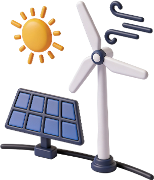
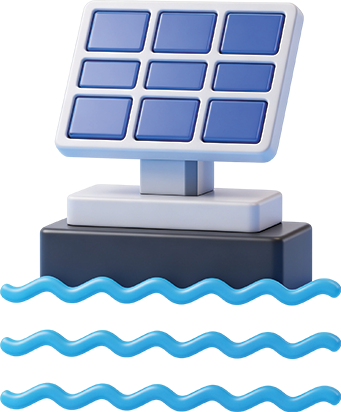

Our Four Pillars
of Execution
SWREL’s service portfolio is built around one conviction: that the shift to clean energy demands more than just solar panels in the ground. It demands engineering precision, technology depth and a partner capable of delivering across every dimension of a renewable energy project—from vast utility-scale installations and water-based floating solar to intelligent energy storage systems and to long-term asset stewardship.

Utility-Scale Projects

Floating Solar
Hybrid & Energy Storage
Operations & Maintenance (O&M)

Utility-Scale Solar EPC
At the heart of the business lies an EPC capability that has delivered some of the world’s most complex solar projects. With a portfolio of completed and ongoing projects totalling 27.3 GWp across 20 countries, SWREL offers full turnkey solutions spanning design, engineering, procurement, construction, commissioning, and grid connection, as well as Balance of System (BoS) contracts for clients managing their own module supply.
Our expertise spans single-axis tracker systems, bifacial modules, robotic cleaning and a 1,500V system design. The 1,177 MWp Sweihan plant in Abu Dhabi, one of the world’s largest singlelocation PV facilities, was delivered with an east-to-west module orientation, a unique eight-high mounting structure and a robotic cleaning system that reduced operational cleaning costs by 30%. In India, we are simultaneously executing over 5.5 GWp of capacity across 8 projects in Khavda, Gujarat, comprising 5 projects for NTPC, 2 projects for GIPCL and 1 project for Engie. Most recently, a signed 5-year agreement with Adani Green, including the first secured BoS order, signals the depth of trust that clients place in SWREL’s execution capabilities.

Floating Solar
Land scarcity is no longer a barrier to solar development. SWREL constructed India’s first floating solar project—a 455 kWp installation in Kerala—and has since built expertise in anchoring systems, bathymetric surveys, floating structure installation and geotechnical assessments for water-based projects.
The Tilaiya Floating Solar Project, located at the Tilaiya Dam in Koderma district of Jharkhand, is being developed as a 155 MW floating solar power plant. A key initiative executed by SWREL, the project is a part of a larger vision to transform reservoir ecosystems into clean energy hubs.
Floating solar plants offer measurable advantages: negligible land use, reduced water evaporation and performance benefits from natural cooling of the panels. For developers working around land acquisition constraints or environmental sensitivities, this represents a genuinely differentiated path to capacity.
SWREL Executed India’s First Floating Solar Project
Floating Solar is Suitable for Reservoirs, Industrial Pools and Lakes
Ventured into Wind Power in April 2025

Hybrid & Energy Storage
As grids evolve and intermittency becomes a greater concern for developers, SWREL has built a fully integrated Battery Energy Storage Solution (BESS) capability, one that covers every layer of the system through a structured six-step delivery model. Beginning with battery module selection and chemistry analysis, the process moves through rack and container design, power conversion station sizing, energy management system configuration and installation, before transitioning into long-term operations and maintenance.
Proprietary modelling tools support minute-level charge/discharge profiling, LCOE calculations, battery sizing optimisation and full grid impact studies. Long-term supply agreements with Tier 1 battery manufacturers, backed by 20 GW+ of procurement experience, translate directly into cost and schedule certainty for clients. From a 2.58 MWh hybrid system at an off-grid gold mine in Mali to one of India’s largest BESS projects currently under execution, storage is a core delivery capability, not an add-on.

Operations & Maintenance (O&M)
A plant delivered is only as valuable as its long-term performance. SWREL’s O&M portfolio has grown from 1.8 GWp in FY 2018 to 13.5 GWp in FY 2026—a seven-fold increase that reflects both client retention and expanding demand.
The O&M offering combines a centralised monitoring platform covering solar, wind, storage, and hybrid assets; drone thermography; IV curve diagnostics; robotic and mechanised cleaning; and AI-driven predictive analytics. A team of 1,400+ in-house specialists ensures response capability at every scale, backed by the Solar O&M Best Practices Mark from Solar Power Europe.